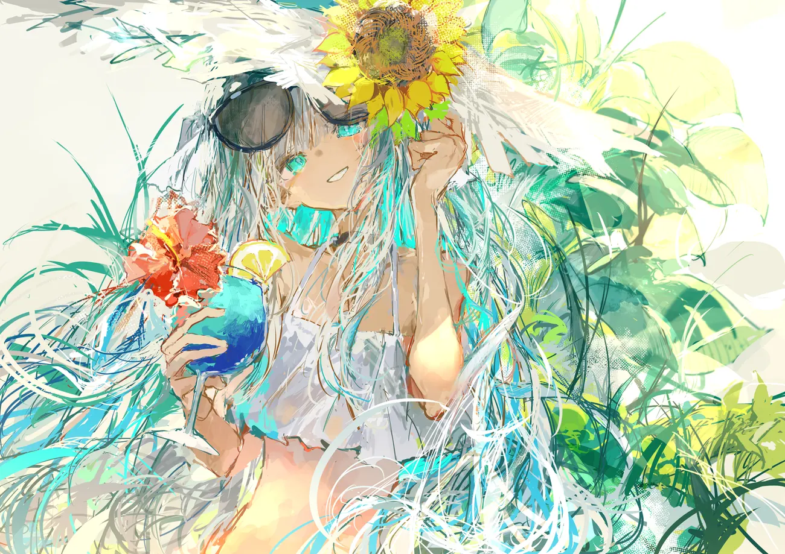
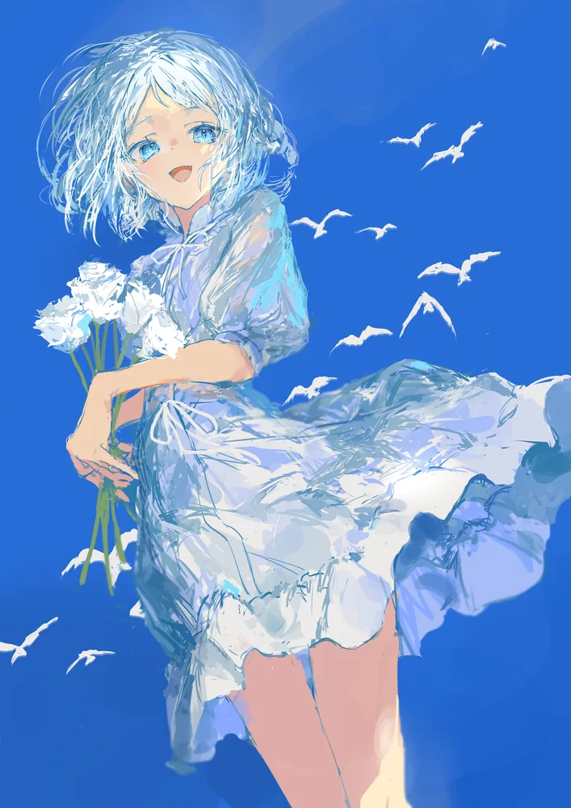

课题代号「心身反应」
你的身体
正在替你
说出那些
说不出口的话
考前一晚，肚子先疼。被点名的时候，手先抖。困到极点，反而睡不着。
我们用一学期，想弄清楚这些反应到底在替我们说什么。
 六段日常 · 六种身体语言
六段日常 · 六种身体语言
先说一件小事
上课铃响之前，教室总是很吵。
有人在讲昨晚的剧，有人在借橡皮，有人趴在桌上假装睡觉。
只有一个人安静地坐着，手心全是汗。
没有人会记得这个画面。连他自己，第二天也会忘。
我们要做的，就是把这些「没人记得」的时刻，一个一个捡回来，看清楚。

那天晚上胃比你先睡着
考前一晚，你把闹钟调早了十分钟。
十分钟后你醒了，比闹钟更早。胃里像有只猫在踩奶，一下一下，很规律。
你开始找原因：是不是晚饭吃坏了？是不是着凉了？是不是昨天那杯奶茶？
都不是。是紧张。只是它没走脑子，直接走了胃。
身体从来不会说谎，它只是不会用你的语言。

那三分钟我给自己判了刑
卷子发下来，你第一眼看的是分数。
然后迅速把它折起来，塞进书包最底层，好像那样它就不存在了。
「我果然不行。」这句话出现得比任何解题思路都快。
真正让你放弃数学的，不是那张卷子，是「努力没用」这个结论。
一次失败是事件。反复失败之后，人会先学会不试。

角落里那顿饭
班级聚餐，你被安排在最里面的位置。
你一直在等一个话题落到你头上。等的时候，你把杯子摆正了三次。
有人说了一句什么，全场笑了。你也笑了，晚了半秒。
那半秒，你在检查：我笑得对不对。
那一眼只花了对方一秒。它在你脑子里待了二十分钟。

那道题全班都没听懂
老师问：「这道题大家听明白了吗？」
教室里安静了三秒。没人举手。你也听懂了，但你也没举手。
不是不想问，是那一刻你突然不确定了：万一只有我不懂呢？
不举手不是你的错。那是房间里所有人的共同决定。
从众不需要压力。只要「大家都这样」这五个字，就够了。

凌晨一点的那部连续剧
躺下了。灯关了。手机也扣过去了。
然后你开始复盘今天说过的每一句话。
那句话是不是很蠢？他那个表情是什么意思？我为什么要笑？
你打开手机，想找点东西把脑子填满。凌晨一点的连续剧，就是这么来的。

出门前的第三件衣服
衣柜翻到第三件，你终于放弃：「算了，穿什么都一样。」
然后出门前最后一秒，你还是回头看了一眼镜子。
那不是爱美。那是你在确认「我到底是谁」。
青春期有一件不太公平的事：身体变化的速度，快过心理适应的速度。
睡不着的时候看
如果现在已经是凌晨，
先别急着想明白。
上面五段，如果你中了不止一条，说明你不是「太敏感」，只是这套警报系统比较灵敏。它曾经很有用，现在有点吵。
- 把明天要担心的事，写在纸上，写完合上。大脑确认「已经记下了」，才肯松手。
- 呼吸放慢到一分钟六次。不是玄学，是给身体一个「安全」的信号。
- 二十分钟还睡不着就起来，做点无聊的事。躺着硬睡，只会让床和焦虑绑在一起。
一份匿名问卷
读到这，问你一句：
上面六段里，有没有哪一段，
你看着看着，慢了一下？
如果答案是「有」，那你就是我们想找的人。
一份 3 分钟的匿名问卷，不记名，不追踪，不评价。数据只用于这次课题的统计分析。
链接打不开？复制到浏览器：wj.qq.com/s2/27865770/oevk/
